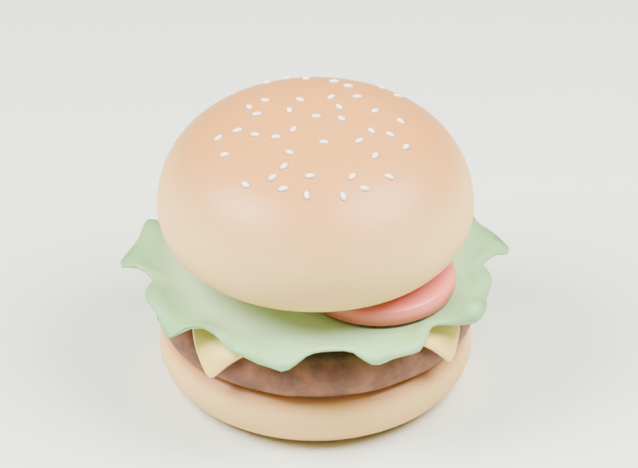
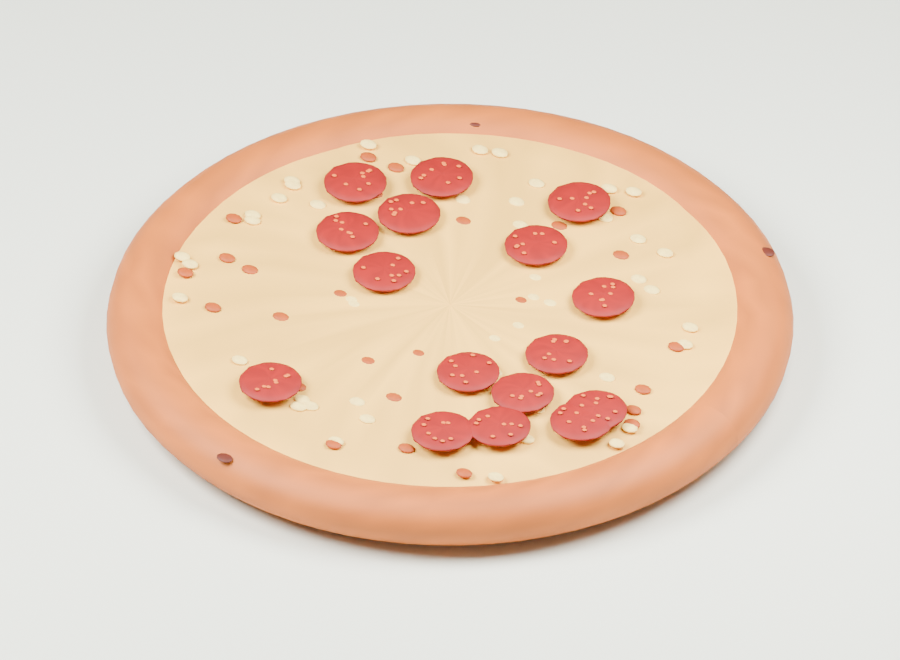
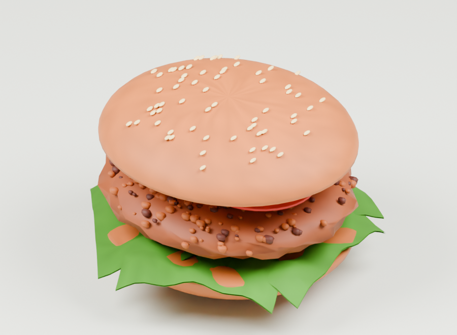

Made to make your own
Our menu.
Your way.
Pick a classic. Choose your ingredients.
Then bring it to your table in augmented reality.

01 / The originalCheeseburger
Beef, melted cheese, fresh vegetables and a golden sesame bun.
Customize in 3D ↗
02 / Fresh from the ovenPepperoni Pizza
A golden crust, mozzarella and pepperoni. Seven toppings to make it yours.
Customize in 3D ↗
03 / A little crunchChicken Sandwich
Crispy chicken and fresh vegetables. Add cheese, bacon or a little heat.
Customize in 3D ↗From menu to table
Take a look before a bite.
Open a dish in Safari on iPhone or Chrome on a compatible Android phone. Tap View on your table, then follow the placement prompts. On iPhone, use the AR configuration menu to choose ingredients; on Android, use the buttons in the camera view.